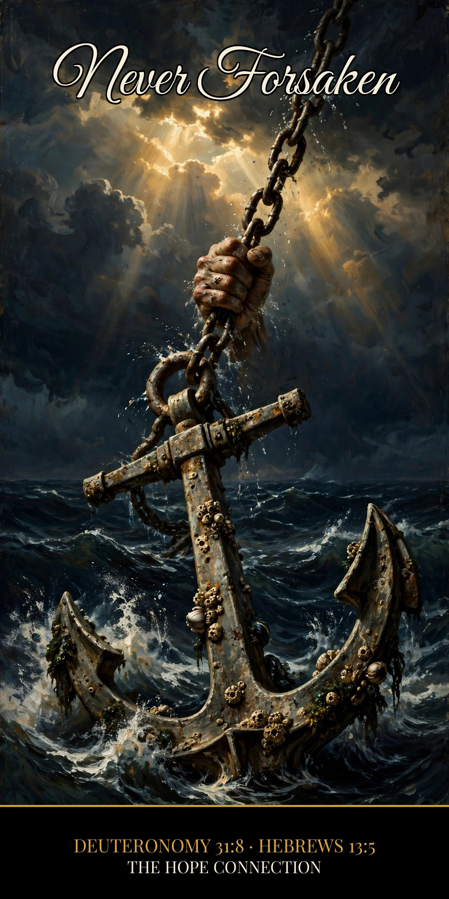

It is the LORD who goes before you. He will be with you; he will not leave you or forsake you.
Deuteronomy 31:8 (ESV)
That’s not a feeling. Feelings come and go with the weather, with sickness, with how the night went. That’s a fact, settled by the God who said it: “I will never leave you nor forsake you” (Hebrews 13:5).
The reason
But why won’t He leave? Not because we’re easy to stay with. We wander. We doubt. Our grip on Him weakens all the time. Here’s why He stays:
He said it — and He cannot unsay it
“If we are faithless, he remains faithful — for he cannot deny himself” (2 Timothy 2:13). His staying isn’t based on your holding on. It’s based on His character. He would have to stop being God to leave you.
The forsaking already happened — and it happened to Jesus
On the cross, Christ cried out, “My God, my God, why have you forsaken me?” (Matthew 27:46). Friend, God forsook His own Son in your place, so that He would never have to forsake you. The one time heaven turned its face away, it fell on Jesus — so it will never fall on you.
You’re held from His side of the grip
“No one will snatch them out of my hand… no one is able to snatch them out of the Father’s hand” (John 10:28–29). You are not held up by your grip on God. You are held by His grip on you. And His grip doesn’t get sick, doesn’t get tired, and doesn’t let go.
The fact: He will never leave you. The reason: He can’t — He promised, Jesus paid, and the Father is holding on.
Christ Proclaimed. Jesus is Lord.
Reflect — Questions & Answers
1. If God never leaves, why does He sometimes feel far away? Because feelings were never the measure. Deuteronomy 31:8 was spoken to Israel heading into a hard land — the promise held in the dark seasons too. Your relationship with the Lord rests on the truth of His Word, not on how close He feels tonight.
2. What if I’m the one who wandered off? Then 2 Timothy 2:13 is your verse: even when we are faithless, He remains faithful. The shepherd goes after the one who wandered (Luke 15). Wandering changes your comfort; it doesn’t change His covenant.
The Hope Connection Podcast
Real hope, no judgment — meeting others where they are in the Name of Jesus. Hear Lewis’s story and new episodes every week.